Caridina Shrimp Collection

Pure Red Line
This shrimp is often mistakenly known as crystal red shrimp as they look very similar yet different in terms of their genetics. They are generally very easy to keep given good water conditions and I definitely recommend hobbyists to give them a try. The value of these shrimps can vary alot from as low as $3 ~ $XXXX a piece depending on the breeder, genetics & quality of the shrimp.
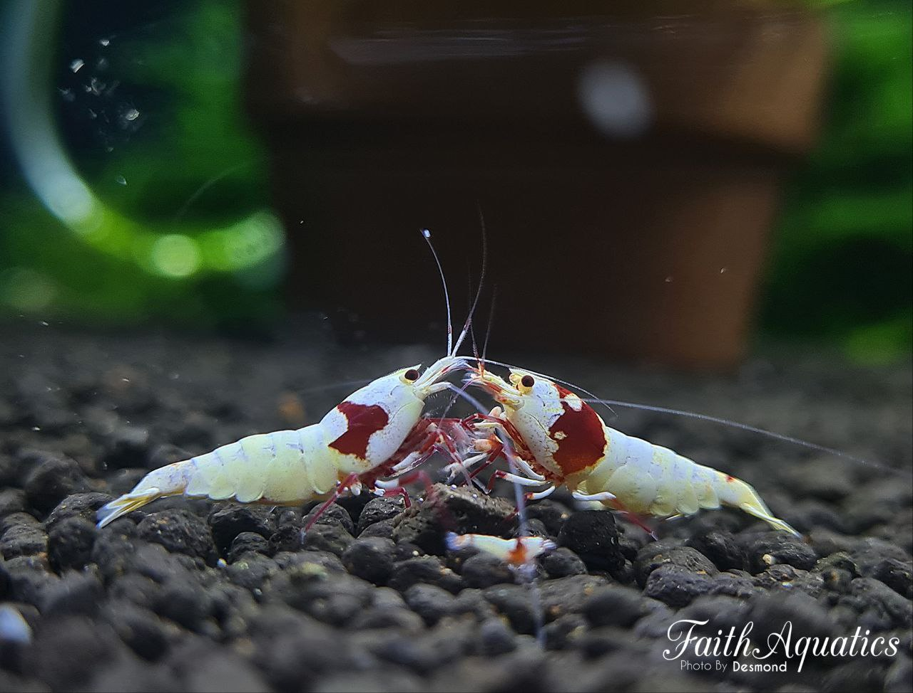
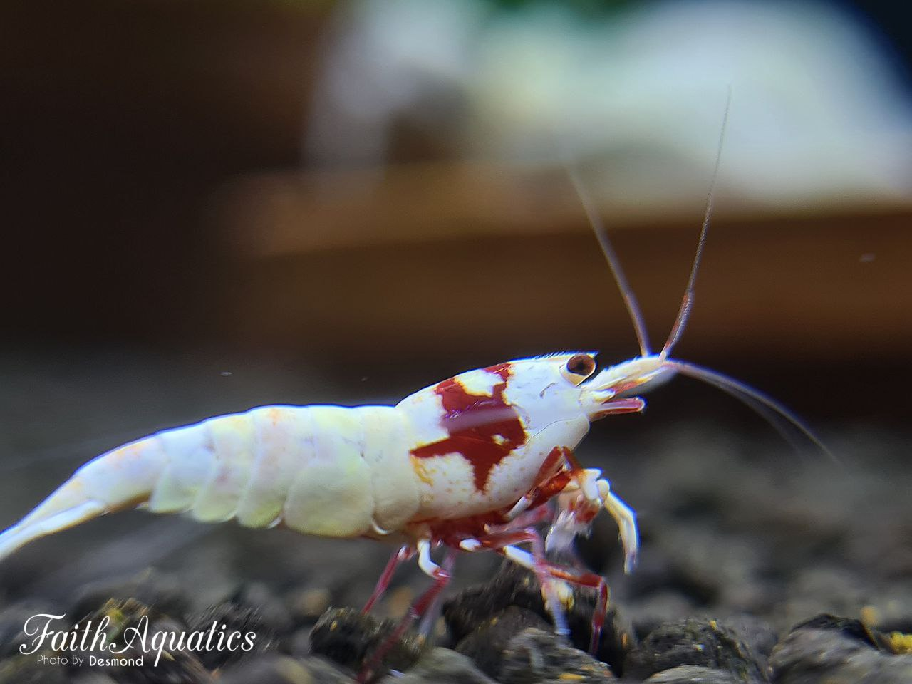
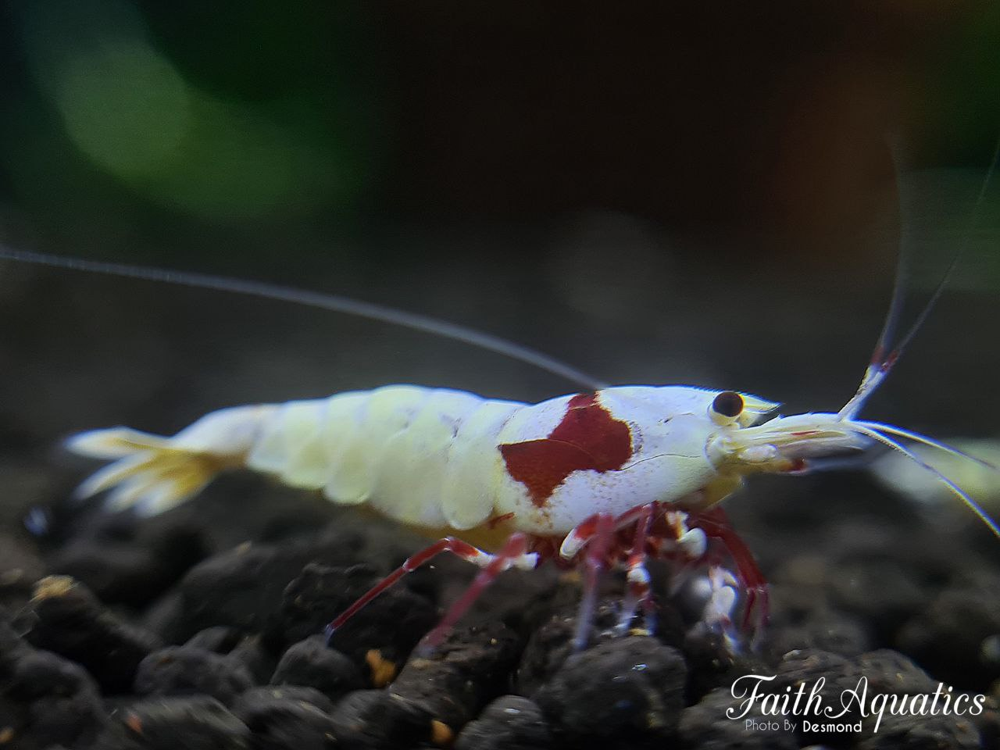
Black Galaxy Boa
The Galaxy Boa shrimp known for being one of the most expensive shrimp in this hobby as they dont breed very true at the moment. They were originally selected out from Galaxy Stardust due to their distinct big spots. The value on this shrimp can vary alot as well depending on the genetics. It is important to note that when paying a premium, look at the breeders breeding colony and ask difficult questions before making a purchase. Always ensure you are getting from a reliable source.
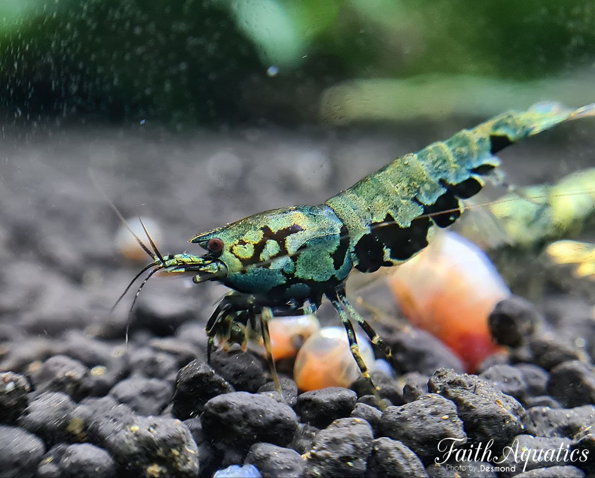
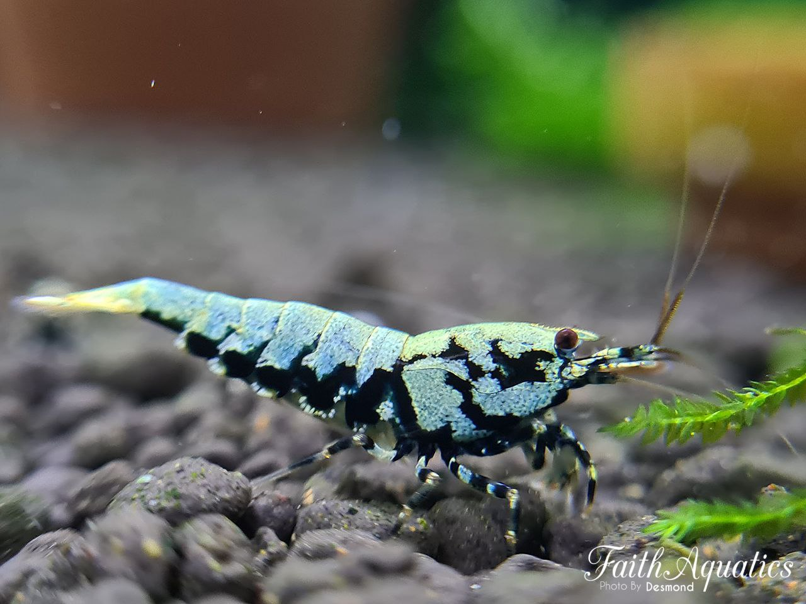
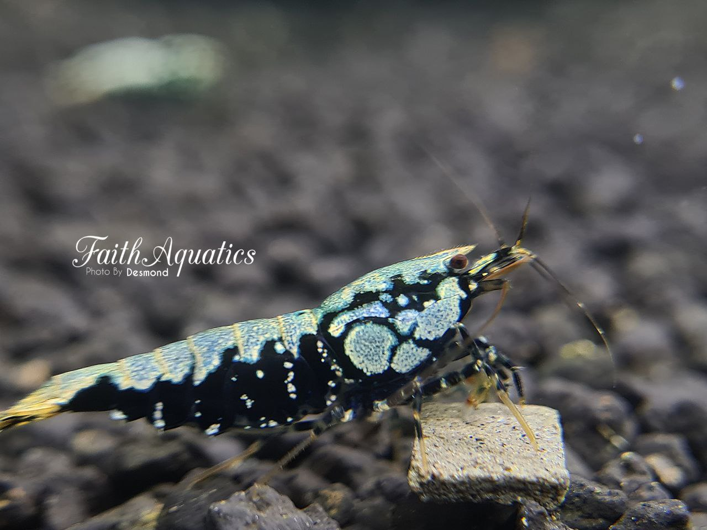
.jpg)
Black Fancy Tiger
The crystal line Black Fancy Tiger, a prized shrimp in this hobby mostly due to the fact that this shrimp are not easy to breed. The value of this shrimps are relatively high till date due to the fact that it requires years of selective breeding for many generations to achieve the desired quality & pattern.
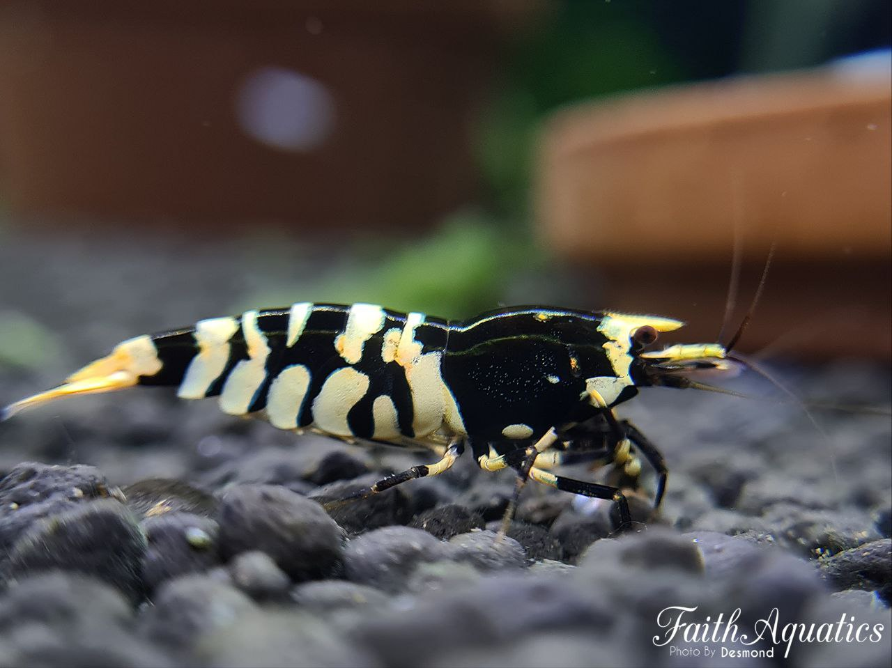
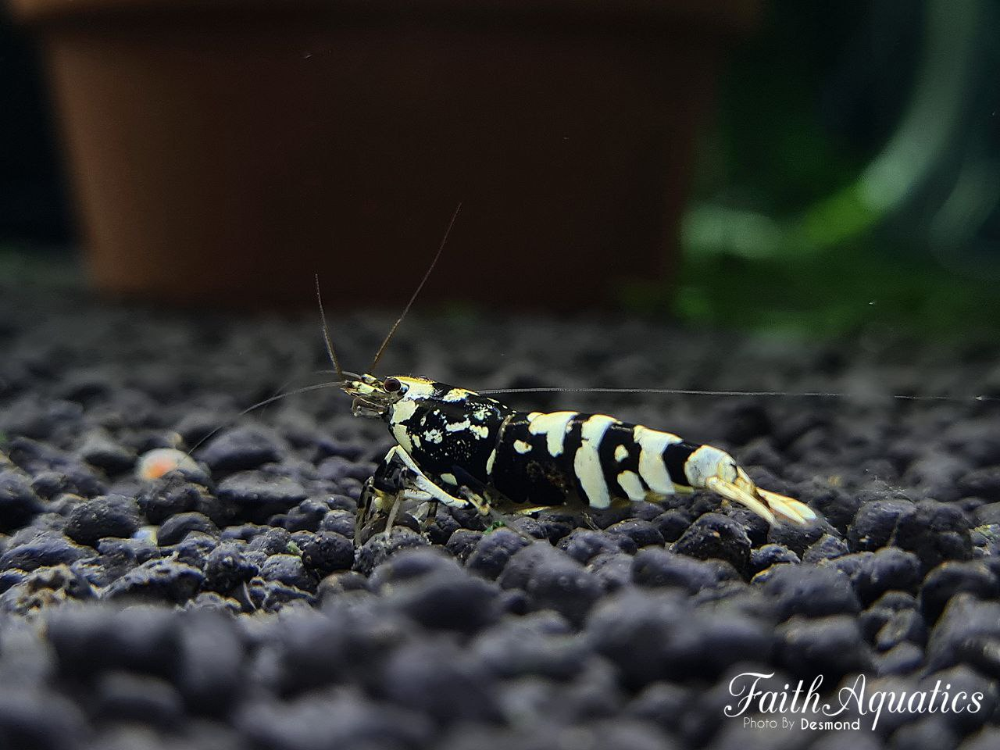
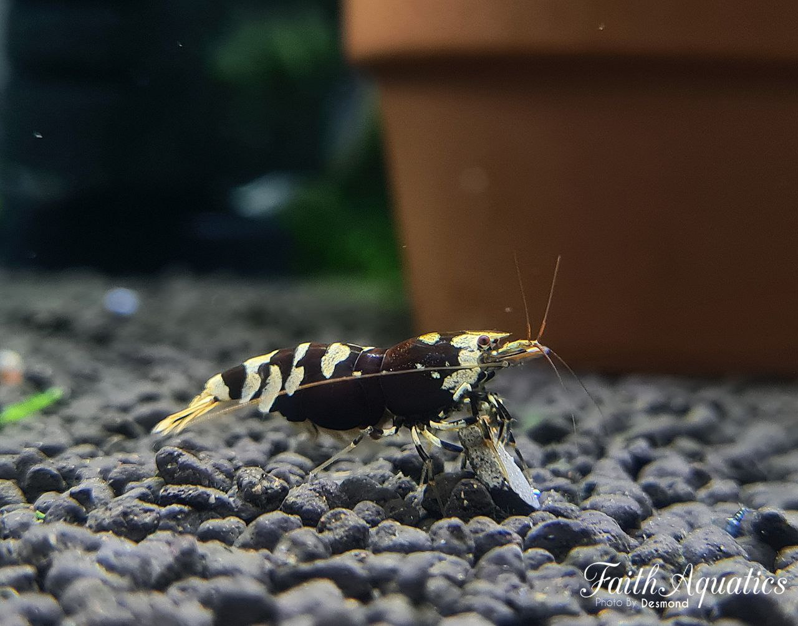
Orange Eye Royal Blue Tigers
These tiger shrimps are certainly one of my favourites due to their distinctive orange eyes that one simply cannot miss and together with its solid blue colours on their body. The beauty of it lies on the eyes.
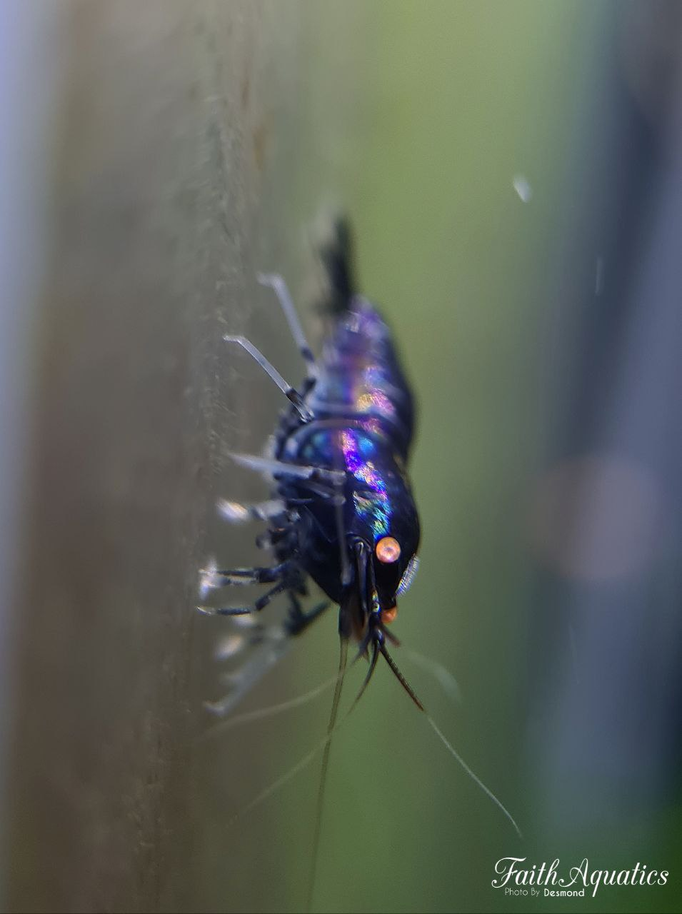
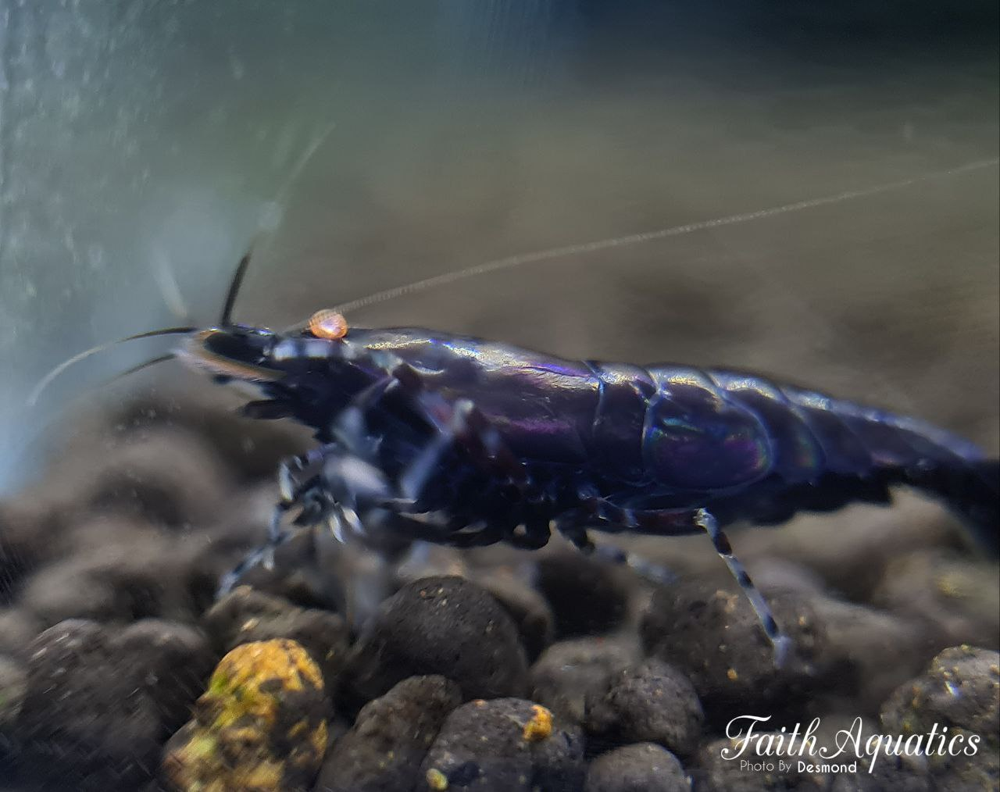
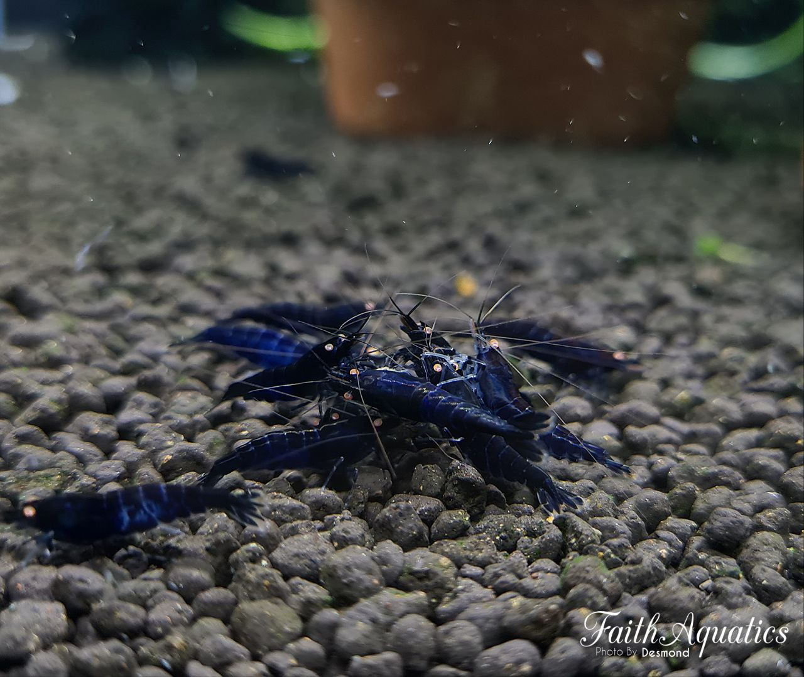